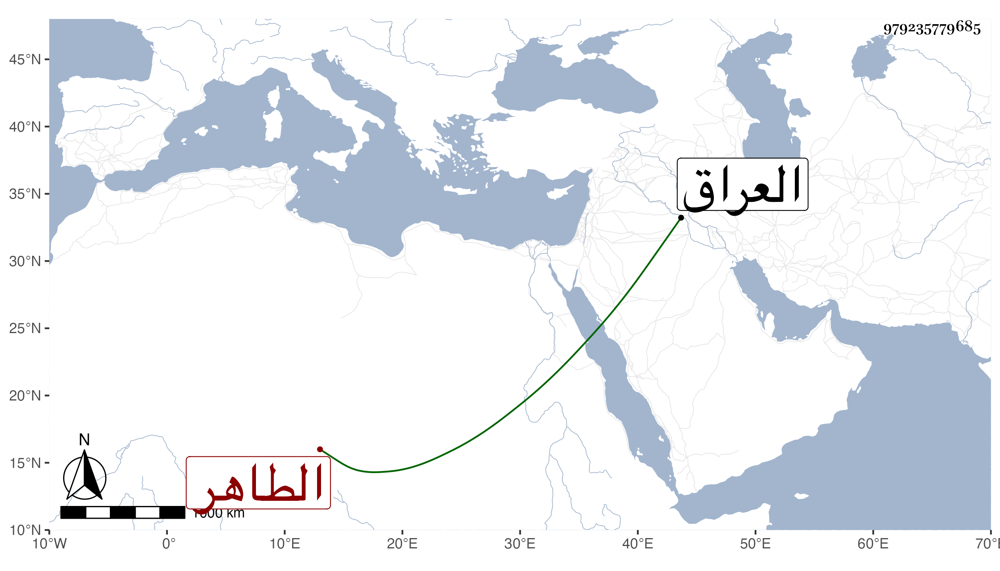

0902Sakhawi.DawLamic.ITO20230111-ara1.EIS1600.979235779685
Biography ID: 979235779685
636
أحمد بن منصور وقيل ابن محمد بن منصور وهو في معجم شيخنا في الموضعين وقرأته بخطه نفسه باثبات محمد الشهاب الأشموني ثم القاهري الحنفي النحوي ويعرف بالشهاب الأشموني . قال شيخنا في معجمه كان فاضلا في العربية مشاركا في الفنون ونظم في النحو منظومة على قافية اللام أذن فيها بعلو قدره في الفن وشرحها شرحا مفيدا سمعت منه شيئا منها وسألني في تقريظها فكتبت عليها شيئا وكذا صنف كتابا في فضل لا اله الا الله ، وكان يقرأ على شيخنا العراقي في كل سنة في رمضان فسمعت بقراءته . ومات في ثامن عشري شوال سنة تسع انتهى . قال المقريزي في عقوده بعد أن نسبه : ابن محمد بن منصور بن عبد الله عن نحو ستين وأنه صحب سنين وكان يقول الشعر الجيد وشارك في الفقه ومال إلى أهل الطاهر ثم انحرف عنهم وأكثر الوقيعة فيهم . قلت ومما قرأه على العراق في صحيح البخاري ومسلم وكتب الخط المنسوب .
